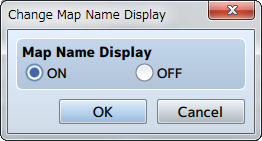
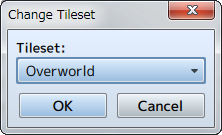
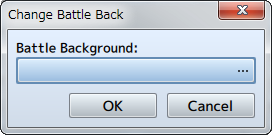
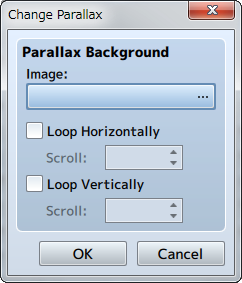
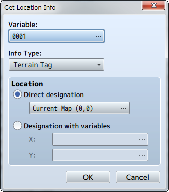

Map
Change Map Name Display

Function
Controls whether or not the name of a map will be displayed when moving to a different map.
Settings
- Map Name Display
- Set to [ON] to display the name, set it to [OFF] to hide the name.
Change Tileset

Function
Changes the settings of the map's tileset. The tileset that can be changed is limited to the map where the event was placed.
Settings
- Tileset
- Specify the tileset after changing it.
Change Battle Back

Function
Changes the settings for the map's battle back. The battle back that can be changed is limited to the map where the event was placed.
Settings
- Battle Background
- You can set the left and right images in the window that appears when you click the [...]. The specified image can be checked in the preview area on the right.
Remarks
- If this event is run during a battle event, the background will change from the next battle.
Change Parallax

Function
Changes the settings for the map's parallax. The changing the parallax is limited to the map where the event was placed.
Settings
- Images
- Specify the image after it is changed.
- Loop Horizontally
- When enabled, the image will loop horizontally. Specify the speed (-32 to 32/0 to stop) in the [Scroll] section to auto-scroll the map.
- Loop Vertically
- When enabled, the image will loop vertically. Specify the speed (-32 to 32/0 to stop) in the [Scroll] section to auto-scroll the map.
Get Location Info

Function
References the value at the specified location on the map and stores it in a variable. Variables that can be referenced are limited to the map where the event was placed.
Settings
- Variable
- Specify the variable to store the acquired value.
- Info Type
- Specify the type of information that is acquired.
- Location
- Specifies the location of where to acquire the value. Select [Direct designation] to specify a specific location, and select the location in the window that opens when you press [...]. To specify the location using a map ID and coordinates, select [Designation with variables], and specify the variables for [X] and [Y].